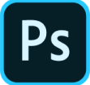

<!DOCTYPE html>
<html lang="en"></html>
<head>
  <meta charset="UTF-8"/>
  <title>Скачать фотошоп бесплатно</title>
  <link rel="stylesheet" href="css/main.css"/>
</head>
<body>
  <section class="main">
    <div class="container">
      <h1 class="title">Скачать фотошоп бесплатно (на русском)</h1>
      <p class="desc">Adobe Photoshop считается наилучшим многофункциональным графическим редактором, и каждая новая версия радует безграничными возможностями, уймой настроек, эффектов, фильтров и огромным инструментарием. Программа лидирует в сфере средств редактирования растровых изображений, и является самым узнаваемым и популярным продуктом. Если вы решили скачать бесплатно этот фоторедактор то наверняка вы знаете для чего он. Зачастую само приложение просто называется Photoshop. Его безумную популярность подчёркивает уже тот факт, что практически всем конкурентам Adobe Photoshop, как, например, Macromedia Fireworks, Corel Photo-Paint, GIMP, WinImages, пришлось добавить в своих продуктах поддержку родного формата – psd.</p><a class="btn__download" href=""> 
        <div class="btn__download__img"></div><span>Скачать с Яндекс Диска</span></a>
    </div>
  </section>
</body>